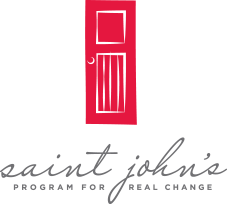

The non-profit that Ben has chosen is St. John’s Program for Real Change in Sacramento. The goal of St. Johns is to support homeless women and children to advance from a point of crisis to a position of self-sufficiency. With the $25,000 award, Ben plans on purchasing a van for the facility that can safely transport the children of St. John's to and from school, as well as to after school programs and YMCA Camp during the summer.